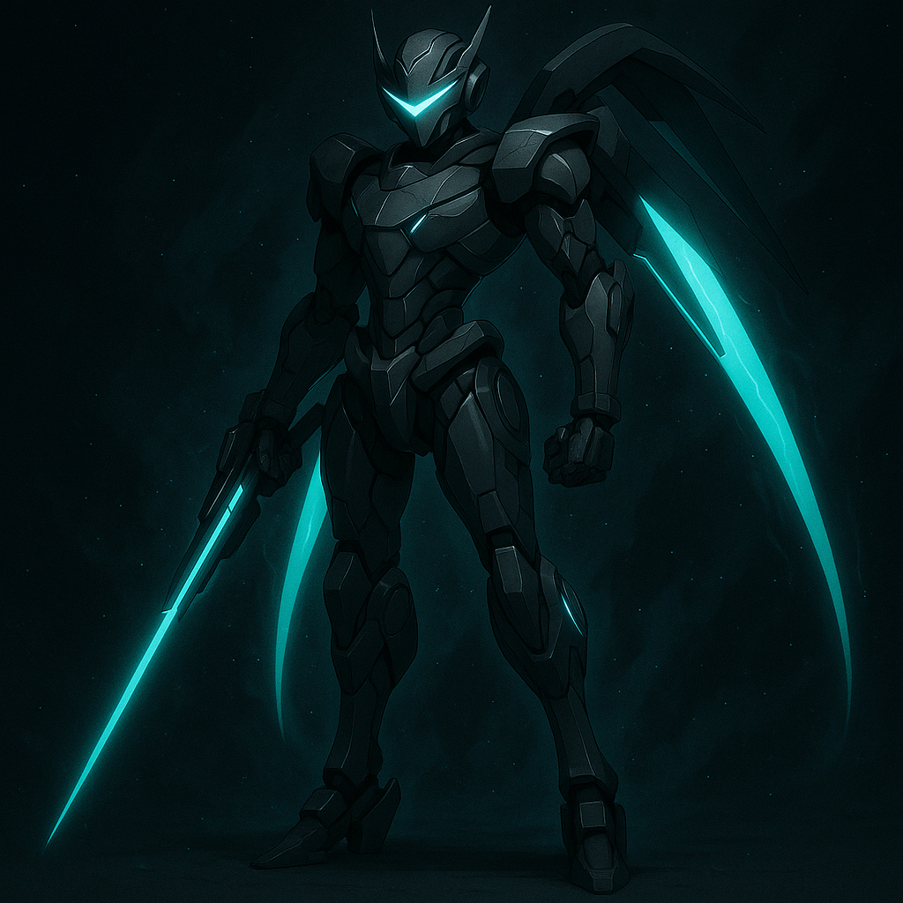

Nebula-06

Alias: The Starpiercer
Age / Race / Role: Model Generation 06 / Kinetican (Recon-Class) / Aerial Recon & Long-Range Sniper
Physical Configuration: Streamlined with thruster wings, a glowing mono-visor, and telescopic limbs designed for high-altitude operations.
Energy Core & Affinities: Kinetic, Aerial, Precision
Threat Tier: B+/A-Rank
Core Stats
• Power: 5
• Speed: 10
• Technique: 9
• Intelligence: 8
• Defense: 5
• Aura Control: 7
Signature Protocols
• Starpiercer Beam
• Anti-Gravity Maneuvering
• Stealth Altitude Shift
• Velocity Drift Shell
• Comet Trace Lock-On
Behavioral Profile
Observational and cocky. Transmits real-time data while taunting targets from extreme distances.
Manufacturer / Allegiances: Kinetican Legacy Systems